I'M FARAZ PIRACHA
My name is Faraz Piracha. I'm currently studying to get a Bachelor in Computer Science at the University of Texas at Dallas.
SKILLS
Skills That I Have
Coding
I have a strong understanding of the fundementals of coding. I have experience with Swift, C++, Java, JavaScript, and Python.
Linux Knowledge
I am experienced with using Bash and have a CompTIA Linux+ Certification.
See CertificationProject Planning
I've become great at collaboration and planning through my past projects and experiences.
Linux Certification
EDUCATION
My Current Education
High School Computer Science Education
Allen High School (2021 - 2024)
During my time at Allen High School I took challenging Computer Science courses that taught me a variety of skills.
Learn MoreBachelor in Computer Science
University of Texas at Dallas (2024 - Present)
I am currently pursuing a Bachelor in Computer Science at the University of Texas at Dallas, one of the leading universities for Computer Science in the state.
Learn MoreHigh School CS Education
Here is a list of the Computer Science classes I've taken and the concepts I've learned as well as the I've projects done:
- Fundementals of Computer Science - 9th Grade
- - Computer Hardware Basics
- - CPU Basics
- - Computer Software Basics
- - App Design Project
- - Introduction to Variables
- - Introduction to Conditionals
- - Python Coding
- Computer Science I - 10th Grade
- - Shell Basics
- - Swift Coding
- - Number systems and conversions
- - Computer architecture
- - Input and output
- - String manipulation
- - Scope
- - Data types and their digital representation and conversions
- - Mathematical, relational, logical, and assignment operators
- - L-values and R-values
- - Analysis, design, coding, testing, and debugging
- - Algorithm design and implementation
- - Arrays
- - Structures and classes
- - Random numbers
- - Digital citizenship
- - Independent Study Project - Lavocado Run
- Computer Science II - 11th Grade
- - Design methodologies (top-down, bottom-up, black-box)
- - Swift Coding
- - Object-oriented design and class relationships
- - Abstract classes and protocols
- - Scope access modifiers
- - Shallow copy vs deep copy
- - Programming style to enhance readability
- - Text-file processing
- - Searching and sorting algorithms
- - Optimal Sorting
- - Big-O notation
- - Digital citizenship
- - Nested loops
- - Lists, Two-dimensional arrays
- - Digital Fingerprints
- - Artificial Inteligence Discussions
- - Independent Study Project - UnIQue
- Computer Science III - 12th Grade
- - Linux Certification Training
- - Swift Coding
- - Sorting algorithms (including heap sort)
- - Composite abstract data types
- - Regular expressions
- - Hashing
- - Program invariants
- - Recursive algorithms
- - Web development
- - Git (Advanced)
- - Digital citizenship
- - Advanced Sort Algorithms
- - Algorithms and Conspiracy Theories Discussions
- - Independent Study Project - Veggie Venture
- - Independent Study Project - Allen Cyber Invitational
WORK
My Projects
Talk to Us
For HackAI 2025 I created a chatbot for potential domestic abuse victims. The chatbot uses GPT 4 API and LangChain which are implmented through Python scripts. The page was created through Node.js. This project won 3rd in its track!
Learn MoreAxxess Health
For Axxess Hackathon 2025 I created a website to bridge the gap between patients and docotors within the home healthcare industry. I created a page in JavaScript/React that uses a query search and an API that fethces data from firestore.
Learn More2024 Allen Cyber Invitational
I worked on and helped host the first annual Allen Cyber Invitational, an annual cybersecurity competition for DFW high school student. My role included marketing, web development, and helping develop the challenges.
Learn MoreVeggie Venture
Inspired by my previous project Lavocado Run, this new game I helped develop, Veggie Venture, was a 2D platformer developed in Unity Game Engine. However the game was never completed due to the team disbanding.
Learn MoreUnIQue
I helped develop an interactive webpage called UnIQue, that focused on helping your brain by improving IQ, mental health, and other factors which affect your brain. The project involved creating JavaScript games and using HTML/CSS.
Learn MoreLavocado Run
I helped develop an endless 2D runner game in Swift called Lavocado Run. Using an object library called IGIS, the game ran using remote graphics on Linux via a browser client.
Learn MoreTalk To Us
Project Repository
https://github.com/FarazPir/hackai-project-2025DevPost Submission
https://devpost.com/software/talk-to-usPresentation
Video
Axxess Health
Project Repository
https://github.com/arun664/axxess-hackathon-2025DevPost Submission
https://devpost.com/software/axxess-healthFinal Product
https://axxess-hackathon-2025.vercel.app/Presentation
Video
Veggie Venture
Project Repository
https://github.com/Allen-ISD-Computer-Science/REPO_Platformer2D_2024Presentation
UnIQue
Project Repository
https://github.com/CSAllenISD/2023-ISP-unIQueFinal Product
https://csallenisd.github.io/2023-ISP-unIQue/HTML/index.htmlProject Journal
View JournalGANTT Chart
https://docs.google.com/spreadsheets/d/e/2PACX-1vSxbW_EHQw2PG2dlDJXtUih-Prg2wUC2LOWIypvGC8vLL9RksNVotKUFv833GIdxZB-fX6-kJLP7m6f/pubhtmlPresentation
UnIQue Project Journal
1-May-2023
Goals
- Finish revamping matching game
- Polish all files, look over everything, and make changes as necessary
- GANTT Chart
Significant Achievements
Scheduling Challenges
This week we faced a lot of scheduling challenges due to our new missions and AP exams. It was difficult to find time to work on ISP this week since all of our in class time was spent on the missions while most of our at-home time was spent studying for our AP exams. I managed to get some work done, but not a whole lot, and from what I can tell most of our group also got small amounts of work done. With our presentation having the possibility of being as early as Wednesday, we will have to have the majority of our ISP completed over the weekend. I think this is doable since the majority of the ISP is done with just some final things that need to be done.
24-Apr-2023
Goals
Significant Achievements
Scheduling Challenges
This week I faced some scheduling challenges. While I had finished the planning stage of the week without any issues, when it came to the execution phase of the week some problems arose. I was able to start my revamp of the matching game, but I did not make as much progress on it as I would have liked. I am planning to make up for this by finishing it up over the weekend. While I think I could have gotten more work done on it if I managed my at-home time a bit better, one thing that caught me off guard was the introduction of a new merlin assignment. Working on this merlin assignment took time away from the ISP so it made it harder to find time to work on my ISP. However I don’t want to blame this assignment as the sole reason for my problems, I think it was my own scheduling practices combined with this that led to me not accomplishing enough. Hopefully in the last week of the ISP I can pick up the pace and get everything done. I worry this will be difficult with the approaching deadline and the need to study for my upcoming AP exams.
17-Apr-2023
Goals
- Come up with another game and research it
- Determine if tangram game is viable, and if its viable figure out how to make it
Significant Achievements
- Brainstormed and researched Sudoku Game 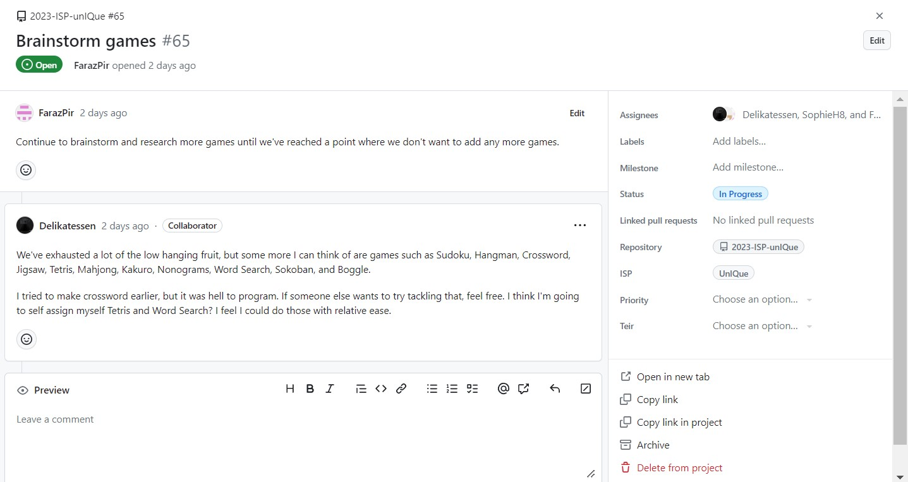 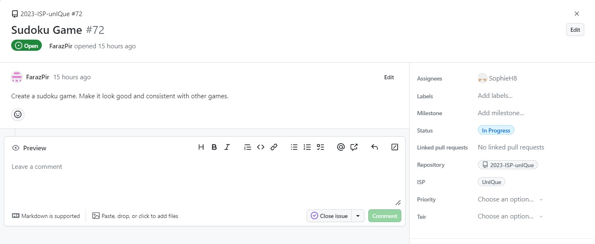
- Decided to discard Tangram Game due to it being too difficult
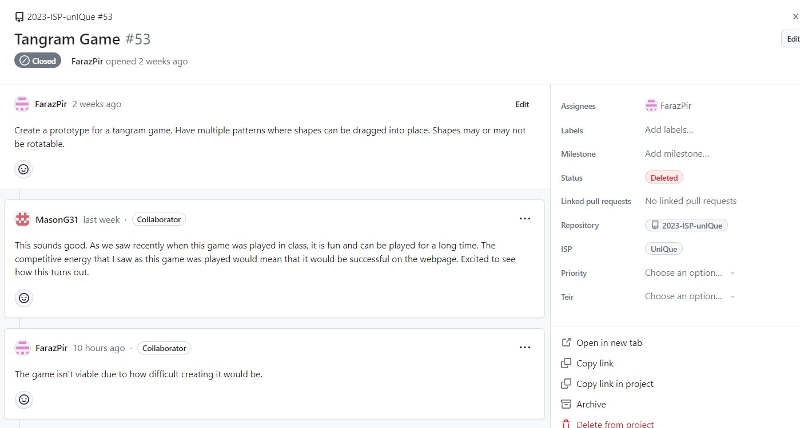
Scheduling Challenges
This week while I did accomplish my goals I was hoping to get a little more done. I had originally hoped to get some code done on a new or preexisting game, but that did not happen. However since my goals didn’t require any coding and mainly involved just planning I was still able to accomplish my goals. I think this week was overall fine since the planning I got done was important, but I need to do some actual coding next week.
10-Apr-2023
Technical Challenges
This week we didn’t face any challenges, everything went smoothly without any major problems. I was able to complete my word scramble game, copy it, and then push it without any issues. The rest of the team also didn’t face any major issues to my knowledge.
Scheduling Challenges
Our team’s progress continued well as usual. I finished the word scramble game and development continued smoothly on everything else. I think at this point we definitely have enough features, now we’re just adding more stuff and polishing it.
Interpersonal Challenges
This week we made a huge breakthrough with one of our long running interpersonal challenges. I finally got in touch with our member in another class and got him to work on something meaningful to the project. I caught him up to speed with the state of the progress and explained the process of developing a game as well as sources to use to create the game. The game he is working on isn’t necessary for the project, so if he doesn’t get it done there’s no harm. I think from this point forward our collaboration will be much better, and I hope this member’s contributions can be meaningful to the project.
3-Apr-2023
Technical Challenges
This week we didn’t face any technical challenges since at this point we knew what we were doing in JavaScript and with branch merging. We have a pretty good understanding of what we need to do and how to do it, so I think from here on we will have few technical challenges. One decision I had to make this week was to shift from working on a tangram game, to a word scramble game since I was unable to find a tutorial for the tangram game, but it was very easy to find one for the word scramble game.
Scheduling Challenges
Our team continued to progress well this week, the development of the website and the games continued smoothly. I had also started to get some work done myself on making a new game. I spent the first part of the week initially trying to find an easy way to make a tangram game, before making the decision to make a word scramble game instead. I then started working on it over the weekend. I think most of the team was pretty productive this week.
Interpersonal Challenges
At this stage most parts of the ISP are worked on independently. Each game is developed by a different person, and other aspects such as the help-tree and the web-design are also assigned to different individuals. I think the fact that we have so much independence is great, and I think it will make the project go by a lot faster. My only worry is that forgetting to communicate things could cause some issues, but if it does I think the consequences will probably be pretty minor.
27-Mar-2023
Technical Challenges
We didn’t face many technical issues this week. The design for our website moved along nicely and the website looks great in its current state. There were some challenges in getting things to look right on all screen sizes, but I think we will fix that later on. Overall I’d say everything went smoothly with technology.
Scheduling Challenges
A lot of our team members have been making a lot of great progress lately, such as the progress we made on the design. Unfortunately I haven’t gotten too much done since I made the matching game. It’s been difficult to find time to get stuff done, but I know I need to make some progress so I don’t drag down the team. This weekend I will try to get work done on a new game, and hopefully myself and my teammates can continue to get lots of work done as the project continues.
Interpersonal Challenges
Our team is still having great collaboration. We were able to talk about designs for the website, and do other communications with the team. The team works mostly independently so we don’t have that much working together on things nowadays, but thanks to Discord we usually have some idea of what progress is being made. I still feel like there could be more communication since I don’t know everything that’s happening with the project a lot of the time, but that shouldn’t be an issue since we know everything that we need to know for our work to get done. However the issue of our member in another class still persists, and I’m not sure how they can be incorporated into our project in a meaningful way, and attempts at getting them to make contributions haven’t been fruitful.
20-Mar-2023
Significant Achievements:
Technical Challenges
This week while I did not do anything significant the rest of my group made a lot of progress. One of my members got a lot of the website’s design done and another member got all of our various pages linked together. We faced no challenges as everything moved smoothly.
Scheduling Challenges
Most of the group worked at a steady pace, but I haven’t really done anything significant since the break. I have plans to create a tangram game, and I did some research into it, but I haven’t found a good tutorial for it. I think unlike the matching game where I had tutorials, I will have to come up with most of the tangram code myself which could be very time consuming. Hopefully I can have this game and one more game done before the project is due.
Interpersonal Challenges
The team continued to work great together and we continued to share our progress on the project. Our ability to split the project into many parts has proved to be very beneficial as we can get work done in lots of areas at the same time. I think our members will continue to work together well and that will lead to our ultimate success.
13-Mar-2023
Significant Achievements:
Technical Challenges
This week I worked out some bugs that the matching game still had and fixed some sizing problems. Once these bugs were fixed the game prototype was in complete perfect working order. Other team members also got some progress done, such as creating a blob for the website's aesthetic, and doing research into other ways to make the website more professional. Overall we didn’t face any real technical challenges this week and everything went smoothly
Scheduling Challenges
I didn’t have that much urgency to get work done this week since I had just gotten a ton of work done the prior week. I think most of the team was getting the work done at a steady pace. While we didn’t face any real scheduling challenges this week I worry if we can keep up the pace in the coming weeks.
Interpersonal Challenges
Our team continued to work great together as we discussed the stuff we did over break. We all did the jobs that were assigned to us and continued to work efficiently as a team. However, the issue of our team members in another class not being able to contribute as much still continued, and addition we couldn’t figure out a way for them to contribute to the project. Hopefully they will be able to play a more active role in the ISP later on.
6-Mar-2023
Technical Challenges
This week a prototype of the matching game was completed. Although I had learned the basics of JavaScript, I was still largely unfamiliar with the language so understanding the code was a bit of a challenge at times. Finding good images without copyright problems took time, and then afterwards the images needed to be cropped and all brought to the same size. Since I had created my own directory for testing JavaScript code, running and testing the code was not much of a challenge. Eventually the game was completed and all bugs were fixed, but doing the whole thing in one week took more work than I expected.
Scheduling Challenges
This week was spring break and it was our group’s time to get the work done that we had not been doing the previous weeks. I’d say I accomplished everything I wanted to during this week at a reasonable pace, however if our group had gotten more work done beforehand working over the break wouldn’t be necessary. However not many members worked over the break, but it's possible some progress was made outside the github repository that I wasn’t aware of.
Interpersonal Challenges
Our group had no in-person meetups or calls during the break as they weren’t really necessary. We had some good communication over discord so we for the most part were able to reach out when we needed to. Since we were all working independently, we weren’t aware of what progress was being made at the moment, but it didn’t matter since we all had different portions of the project that didn’t overlap.
27-Feb-2023
Technical Challenges
This week we managed to achieve some technical accomplishments. I started to learn the basics of JavaScript and other team members made some progress on their work as well. Learning JavaScript didn’t present many challenges, although I worry that just knowing the basics won’t be enough to get through making the games. It was similar to other languages I know so I think I’ll get the hang of it quickly. Also now that we’ve got the hang of merges our collaboration on GitHub will be much better now.
Scheduling Challenges
I’m glad that the team has started making some progress. I think as long as we don’t get lazy this progress will continue. Our team seems to also all be familiar with Discord now, so communication with the team will be a lot smoother now. I still worry that we won’t keep up the pace, but only time will tell. However, having assigned tasks should make scheduling go a lot smoother.
Interpersonal Challenges
Our team continued to have great collaboration with one another. We’ve established means of communicating everything we get done in GitHub so we’re now able to have a better idea what everyone is up to. We also are able to contact our Release Engineer whenever we get commits done, so getting things merged should be easy. Overall I think we’re currently working great as a team.
20-Feb-2023
Technical Challenges
This week we didn’t face any technical challenges since we didn’t really do much on the ISP this week, as we were busy with our in class assignments. We had to add a license.txt file this week, but that was very simple and easy.
Scheduling Challenges
Over the weekend we had established what roles everyone will play and what we needed to get done and how to do it, now we just needed to get the work done. While we didn’t accomplish any work yet, I think since we now know what to do we will be getting lots of work done on the ISP in the coming weeks.
Interpersonal Challenges
Since we didn’t do any ISP stuff this week aside from adding the license.txt, we didn’t really do any collaborative work. I think we will be seeing more independent work from here on now that everyone’s role has been established. I think a lot of the project's success relies on each team member’s independence, but we may still need to collaborate at times.
13-Feb-2023
Technical Challenges
We faced many technical challenges this week as we were trying to complete our first progress check. We faced challenges when it came to merges, as for a while we weren’t sure what the progress check meant by three merges, and once we figured out what it meant we didn’t know how to do it. After some research we figured it out, and then we decided to implement it by splitting up the various departments and features in different branches which would all be merged back to the main branch. Getting the merges to work properly took some time and we ran into some problems, but eventually we managed to get it to work.
Scheduling Challenges
While we did make a lot of progress this week, it was mostly due to the progress check compelling us to do so. Additionally since we were busy learning L-Systems, we held off the progress check all the way till Thursday, so most of us had to do all of our commits and issue interactions in the last two days of the week. We also had to figure out how merges worked so it put a lot of pressure on us in the last two days. I think this week definitely serves as a lesson to get a head start on the weekly progress checks.
Interpersonal Challenges
Our entire team worked great together this week. In the beginning of the week we successfully collaborated on the presentation and the advertisement, and our end product for both of them was great. We also managed to use Discord to keep our member in a different class in the loop, which was a great improvement from prior weeks. Despite us having to crunch most of the work at the end of the week, we were able to do a call on Discord and get everything sorted out. We continued to communicate on Discord as we got our work done and kept each other in the loop. By working together and planning things out we were able to get a lot of work done at the end of the week despite the lack of time we had, and we all were able to contribute something. So far this has been one of the best weeks for collaboration.
6-Feb-2023
Technical Challenges
No technical challenges this week as not much work was really done by ISP this week since the main focus this week was learning about L-Systems. One thing we did get done on the ISP was a presentation on potential features, which was an issue we created a while back. I was not aware of any other work done on the ISP although it's possible some members continued learning JavaScript or did more work on planning the chatbot.
Scheduling Challenges
We’ve somewhat begun to pick up the pace in comparison to prior weeks. Most members seem to have started learning JavaScript, and it looks like efforts are being made to knock out issues as seen with presentation, but still very little has been started on the ISP. We’re still not too far into the semester so I think we’ll eventually start to pick up the pace, but at the moment we still got ways to go.
Interpersonal Challenges
Our team continued to work well together and we had both communication in person and through Discord. There was still the issue of our teammate in another class, but we are able to reach out to them when we need to, although that doesn’t happen much. In the future we should probably assign that member a certain task they can do on their own, so that they can contribute to the team as much as everyone else is.
30-Jan-2023
Technical Challenges
No technical challenges I was aware of, not due to not getting anything done this time, rather it was instead due to school being canceled for most of the week due to icy roads. We didn’t communicate a lot over this time so I’m unsure what problems other team members encountered.
Scheduling Challenges
This break gave us a lot of time to get work done. Since we didn’t communicate too much over break I don’t know how much was done, but from the conversations I’ve had with other members it's clear some JavaScript learning was done. A member also sent a message out to all members to start coding in JavaScript so more of us probably got started on that. Overall due to being out the whole week I’m not sure what exactly was done, but I’m under the impression members did get work done as there was some new activity on the GitHub.
Interpersonal Challenges
Our group being unable to communicate in person was a huge challenge as no one knew what each other was working on at home. We were able to communicate on Discord when necessary, but a situation never arose where we needed to, aside from sending a message to get started on JavaScript.
23-Jan-2023
Technical Challenges
We still didn’t face any technical issues due to the lack of anything technical being done. Game team still hadn’t started and the chatbot team continued to chart out and plan the workings of the chatbot.
Scheduling Challenges
Still suffering from the same challenges from last week, which have only been compounded by an upcoming SQL quiz we need to study for. Despite this we’re not worried at all since we’re only a couple weeks into the semester and we still have plenty of time to get started. The question is if we will start to pick up the pace soon enough, or remain not doing much. However the chatbot team didn’t suffer from as many of these problems as they had gotten some more work done.
Interpersonal Challenges
The team continued to work together very well and collaborate on ideas. The chatbot team and game team operated mostly independently so not everyone was fully informed of what work had already been done, but everyone knew what was necessary to their job so it didn’t matter. There was still the problem of communication with our member in another class.
16-Jan-2023
Technical Challenges
We did not face many technical challenges this week as no technical work had really been done yet. At the moment our team is split into halves, with one half focusing more on the chatbot and the other half focusing more on the games. The chatbot half got some work done planning out the chatbot, while the game half did not start yet, mostly due to needing to focus on learning SQL and not knowing JavaScript yet.
Scheduling Challenges
We did face some scheduling challenges as the game half had not started any work at all, mostly because we were preoccupied with SQL stuff. I do not believe the chatbot half had these problems as they seemed to be productive with their work. The game half still needs to get started by learning JavaScript, so getting started could be a challenge.
Interpersonal Challenges
Our group was able to collaborate well and talk about plans for the ISP in the future as well as get work done on the chatbot. We had no issues with collaboration, although one of our members was unable to fully participate in collaboration due to being in a different class. In the future we need to make sure to stay in touch with that member so they’re in the loop on what’s happening.
9-Jan-2023
Technical Challenges
This week we did not face too many technical issues as we did not start the actual code yet and only worked on the setting up the GitHub Repository and Project Page. Getting the hang of using issues in GitHub took some time and there was some confusion in the beginning. There were also issues we ran into with git push due to permission errors. Eventually the team got the hang of using Git and GitHub so the challenges ultimately did not cause any problems for us.
Scheduling Challenges
This week we didn’t face any scheduling issues but that’s only because we didn’t have anything to schedule yet. Since this week was just setting GitHub up there wasn’t anything we really needed to schedule and we were able to complete our tasks on time without any issues. We’re still working out a timeline for our project so we could run into scheduling issues later down the line if we don’t get our timeline together soon, but for now everything seems to be going smoothly.
Interpersonal Challenges
Our team worked well together this week. We were all able to work together and help each other with setting up GitHub. We were able to have some discussion over the future of our ISP and we overall worked well together as a team. Since one of our members isn’t in the same class as the rest of the group, our in-class discussions weren’t able to include them, but we still have communication through Discord so we can still communicate with them when we need to.
2-Jan-2023
Roles
Development Engineer
The Development Engineer also known as the Software Engineer is responsible for designing and developing the computer program or application. In our case the Development Engineer will be responsible for planning and creating the code for our website and all of the content of the website, such as the JavaScript games. They will need to be good at coding in HTML and JavaScript in order to be effective at their job. I think at the moment I’m not suitable for this role due to my lack of JavaScript knowledge, but if I learn it then then that won’t be an issue. I think learning JavaScript is the biggest hurdle with this role and I think we can overcome this by getting this out of the way as soon as possible.
QA Engineer
The Quality Assurance Engineer’s job is to monitor each phase of the software development process to make sure that it meets quality standards and that the final product turns out as intended. They will need to be able to test the program for bugs and other issues that could be problematic to our ISP. In our project this will mostly involve checking the JavaScript code, and while the HTML code will also need to be checked, it won’t be nearly as time consuming. This job will require someone familiar with the ins and outs of HTML and JavaScript. Just like with Development Engineer I could do this role if I knew JavaScript, but at the moment I don’t. However I think I could do the HTML part pretty well. Apart from the hurdle of learning JavaScript, one hurdle we could face is being unable to debug the code, but this could be prevented through good coding practices like whitespace and helpful comments.
Project Manager
The Project Manager’s job is to organize, plan, and execute the project. They accomplish this by doing planning, keeping up with the schedule, managing resources, and defining the scope of the project. This person does not need to know all the ins and outs of the code, but they need good leadership and communication skills to ensure everything runs smoothly. I think I’m okay for the job since I think I do a good job at managing and communicating with people, but I don’t think I’m perfect for the job since I tend to be lax at times and my productivity could be a lot better. I think the biggest hurdle we could face from this is simply not having a firm plan and timeline so we should make sure this is established before we go too far into the project.
Product Manager
The Product Manager’s job is to identify the customer’s needs and create a vision for the final product. They work closely with all team members to make sure the development of the product is lining up with the correct vision for the product. They have various responsibilities like deciding what features should be prioritized, making sure the user’s needs are represented, and helping manage the teams. Since the Product Manager works at a conceptual level they don’t need any programming skills or lots of computer know-how, only good leadership skills. I think I wouldn’t be a good fit for this since I myself don’t have a clear vision for the final product and I only really have a vague idea of what it should be. I think our concept being too vague is the main hurdle, but as long as our Product Manager has a specific vision in mind then we should be able to overcome this issue.
Release Engineer
The Release Engineer’s job is to ensure the deployment of the source code and ensure its ready for distribution. In our case that would be just getting the website online and possibly creating an app if we decide to go that route. The knowledge required would be more stuff about HTML and web domains, rather than actual coding knowledge. I don’t know if I’d be suited for this job since at the moment I’m not sure if I possess the necessary knowledge for this or not. I’m not sure what exact hurdles we’ll face with this, but it will most likely just be issues with getting the website online. I don’t think we can really avoid this hurdle, we'll just have to do some troubleshooting and additional learning and hope for the best.
Lavocado Run
WRITING
My Essays and Analyses
Optimal Sorting Analysis
Source Code
https://github.com/FarazPir/Optimal-SortingOptimization Attempts
https://docs.google.com/spreadsheets/d/1M9_RAGS9B7Kv6ZSINylTMLnpE1lxG6YADurIUBcZ7yI/edit?usp=sharingCollaborators
- Sophie Hews
- Mason Graham
Original Flowchart

Sort Analysis
Procedure
In order to determine which factors determine the runtime of various sorts, bubble sorting, insertion sorting, and selection sorting algorithms were used to sort various text files, and the results were timed. This was done by running time cat <text file>.txt | swift main.swift > /dev/null, which runs main.swift, times it, and sends the output to null in order to save time. This was done on a text file of the entire dictionary, a text file of the dictionary reversed, and a text file of the dictionary randomized. From these files, text files with fewer words were created by adding | head -n <# of desired lines> to the cat command. Once all the text files were created, the sorting algorithms were run, timed, and recorded.
Sorting Methods' Source Code
- Bubble Sorting Code: https://github.com/FarazPir/Bubble-Sorting
- Insertion Sorting Code: https://github.com/FarazPir/Insertion-Sorting
- Selection Sorting Code: https://github.com/FarazPir/Selection-Sorting
Sorting Method Analysis Data
https://docs.google.com/spreadsheets/d/10BaeHVZAdUhNdo9W57pCTJFaZn996MmuAw6MVGRrA58/edit?usp=sharingExplanation
From the graphs of the data several explanations can be made. For text files with the words already in order, smaller amounts of words tended to be sorted faster by insertion sorting, slightly slower by bubble sorting, and much slower by selection sorting. This is likely because insertion sorting and bubble sorting start by checking if everything is already in order, and while selection sorting selects an index then checks for a minimum, then selects the next index and checks again, making it much slower for words that are already in order. For text files in reverse order while the trends showed bubble sort to be the most efficent, removing the instances of the CPU overtiming, it's found that insertion sort is the fastest. Selection sort is still the slowest. This is because insertion sort's method of swapping is faster than bubble sort's checking each pair of words one by one which takes ages since it needs to take the strings at the end all the way to the start by swapping one by one. Selection sort is only efficient for small quantities of words here because selection sort has to constantly traverse the whole array to find the lowest value, which is quick on small amounts, but on large amount of words in reverse order, having to traverse the entire array to find the string with the lowest value takes ages. Lastly, for the text files in random order, the trend shows that insertion sort is the fastest, bubble sort is the second, and selection sort is slowest. However the trend only shows selection as the slowest because it starts timing out at much lower quantities of strings than the others, and when looking at the lower quantites of words before selection sort starts timing out, its acutally the second fastest. Insertion is as usual the fastest due to it's method of sorting being faster than bubble sort's comparing every single pair and selection sort having to traverse the whole array to find the minimum. Selection sort is only faster than bubble sort for smaller amounts of words because traversing the entire array for a mininmum takes too long for larger amounts of words to the point where checking each pair is faster. Overall insertion sort is the fastest, selection sort is the second fastest for smaller amounts of words, but for larger amounts of words bubble sort is faster.
Digital Fingerprints
Digital Fingerprints: History and Importance
Faraz Piracha
Allen High School STEAM Campus
Advanced Computer Science II
Mr. Ben-Yaakok
September 23, 2022
Digital Fingerprints: History and Importance
Over the years the importance of the internet has increased and increased as more purposes for it are continuously found. Many of these purposes involve the internet having to handle very important information such as bank credentials, logins to crucial systems, personal details, and other things which we would want to be confidential. In order to keep the internet secure HTTPS has been developed.
What is HTTPS?
HTTPS is a secure version of HTTP which is the main protocol used to have the browser and website communicate. It works by using an encryption protocol called Transport Layer Security (TLS) which works by having the website obtain a digital certificate from a Certificate Authority (CA), then the browser, which has a list of the trusted and reputable certificate authorities, is able to confirm the authenticity of the website (Cloudflare, n.d.). HTTPS serves the purpose of keeping traffic encrypted so that data coming from the site or the user is safe and allowing the browser to be sure it’s on the proper site and has not been redirected to some fraudulent site.
Problems with HTTPS
When someone attempts to steal data from the connection between the user and the website or pose as the user or the website, it is called a man-in-the-middle (MITM) attack. While HTTPS helps protect against these, there are still ways attackers can get around HTTPS such as through HTTPS spoofing, SSL BEAST, SSL hijacking, and SSL stripping (Imperva, 2019). However there is another more common security threat than MITM, in fact, it happens all the time and may be occurring on your computer right now, it’s called an HTTPS Proxy Appliance. An HTTPS Proxy Appliance is installed by any corporation, educational institution, or other internet provider and is able to intercept SSL connections by creating a spoofed web server certificate to impersonate the site the user wants to go to and then uses the fraudulent CA it installed to sign itself in. This allows the proxy to monitor everything the user does on the internet including everything they access and credentials they put in and is even able to filter unwanted material from the internet. Unfortunately, this SSL interception cannot be prevented, but it can be detected due to the SSL certificate’s hash (Gibson, n.d).
How to Combat SSL Intercetpion
A hash is a mapping of data to a fixed-length output using an algorithm, and if one bit of the certificate is changed its hash completely changes, ensuring the encryption of the hash. In order for the hash to be secure, it needs to be a one-way function so that no one should be able to reverse and it shouldn’t have collision which is when two pieces of data produce the same output (digicert, 2021). The hash is used to fingerprint the digital certificate, and since a fraudulent certificate will have a different fingerprint, you can check to see if the certificate is fraudulent by using a site such as grc.com to see what the correct fingerprint should be. When checking to see if a certificate is being spoofed or not, one might get some false-positives where the certificate might look spoofed due to having a different fingerprint, but in reality, it’s because that website has multiple certificates. However, one of the websites that provide legitimate fingerprints could get intercepted to show the fraudulent fingerprint instead resulting in false-negatives. However, this can be prevented by making sure the site has an EV certificate which can’t be spoofed, and if it doesn’t then one can just look at the fingerprints on a device that doesn’t have an HTTPS proxy and just print out the fingerprints for reference.
Conclusion
While we do have ways to defend against HTTPS Proxy Appliance, it begs the question of whether it's okay for these to be installed on your computer in the first place. Personally, I believe it depends on what organization is installing it. If an educational institution wants to keep tabs on its students while they use school devices then that’s perfectly fine since the school devices are school property in the first place. On the other hand, if an internet provider is doing this, then things become unethical as one should be able to use the internet for personal uses without having to be monitored. Things begin to go into the gray area when it comes to work and the government, but ultimately it depends on whether the people need to monitor the user’s internet access and whether it's a violation of the user’s privacy or not. Overall the security of the internet is an important matter, but often this security can be put at risk and it's up to us to make sure that we have our privacy when we need it.
References
Cloudflare. (n.d.). What is HTTPS? Retrieved August 26, 2022, from https://www.cloudflare.com/learning/ssl/what-is-https/
digicert. (2021, June 22). Understanding hash functions & what role do Hashes Llay in TLS/SSL certificate. SSLStore. Retrieved August 26, 2022, from https://www.thesslstore.com/knowledgebase/ssl-support/understanding-hash-functions/
Gibson, S. (n.d.). SSL TLS HTTPS web server certificate fingerprints . GRC. Retrieved August 26, 2022, from https://www.grc.com/fingerprints.htm
Imperva. (2019, December 29). What is MITM (man in the middle) attack. Imperva Learning Center. Retrieved August 26, 2022, from https://www.imperva.com/learn/application-security/man-in-the-middle-attack-mitm/
Checking for SSL Interception Flowchart

AI Sentience
Sentient AI and its Benefits
Faraz Piracha
Allen High School STEAM Campus
Advanced Computer Science II
Mr. Ben-Yaakok
September 23, 2022
Sentient AI and its Benefits
AI has come a long way from being a convenient way to perform simple tasks, to being able to perform complex tasks that would be difficult for a human to even comprehend. Some believe that one day AI will even become fully sentient, but whether this is a good thing remains to be debated. I believe that sentient AI is a good thing and will benefit mankind.
What AI has already done for us
To start, AI so far has already done a lot of amazing things for us. For instance, OpenAI’s chatbot, GPT-3, is being used to write screenplays, compose marketing emails, and develop video games. AI such as Github’s CoPilot can even write its own code. But AI can go far beyond making things easier for us, it can even do things that we could never achieve on our own. DeepMind’s Alphafold has made predictions for nearly all 200 million proteins of the human body, producing data that allows new medicine to be produced that could potentially save many lives (Roose, 2022). AI continues to evolve and improve with time, and with each improvement, it can perform even more tasks that can both make things easier for us and do things that we could never do, and while some of these achievements may seem trivial some of them may have a greater impact on our lives than we could ever imagine.
Where Sentient AI could take us
Now AI has already done so much good for us, imagine what it could do if it was sentient. If AI was sentient it could understand the nature of other humans better. For instance, self-driving cars with sentient AI would be able to better anticipate the actions of other drivers on the road since they would now have the capacity to understand human factors of driving like mood and behavior. Sentience will also allow AI to have self-motivation, meaning instead of being given a problem to solve, it will identify its own problems and solve them (Musser, 2017). This could allow AI to be of even greater service to mankind since it will be able to solve problems we didn’t even know we had. Sentient AI could also be useful for giving people therapy. This is already being done with an AI called Woebot, but Woebot still has a lot of limitations and while it can be therapeutic, it does not serve as actual therapy (Brown, 2021). However sentient AI could change this and serve as what we need to give people actual therapy that goes beyond just having people confess to AI, but AI being able to actually understand human problems and help humans solve them.
Why it won't lead to our downfall
Some may argue that sentient AI could lead to AI turning on us like we see in Sci-Fi movies such as Terminator, but this is far from reality. There is no evidence that AI becoming sentient will cause it to turn against us. AI is designed to mimic the human brain in small ways, it could not get to the point where we could no longer control it even if it did gain sentience (Metz, 2022).
Conclusion
However, we are far from AI becoming sentient, and it is unlikely it will become sentient anytime soon, and it may not even be possible for it to become sentient. However in the event, it did become sentient, it would be very beneficial to mankind.
References
Brown, K. (2021, June 1). Something bothering you? tell it to Woebot. The New York Times. Retrieved September 2, 2022, from https://www.nytimes.com/2021/06/01/health/artificial-intelligence-therapy-woebot.html
Metz, C. (2022, August 5). A.I. is not sentient. why do people say it is? The New York Times. Retrieved September 2, 2022, from https://www.nytimes.com/2022/08/05/technology/ai-sentient-google.html
Musser, G. (2017, June 19). What the rise of sentient robots will mean for human beings. NBCNews.com. Retrieved September 2, 2022, from https://www.nbcnews.com/mach/tech/what-rise-sentient-robots-will-mean-human-beings-ncna773146
Roose, K. (2022, August 24). We need to talk about how good A.I. is getting. The New York Times. Retrieved September 2, 2022, from https://www.nytimes.com/2022/08/24/technology/ai-technology-progress.html
Decision Bias
Decision Making Bias in our ISP
Faraz Piracha
Allen High School STEAM Campus
Advanced Computer Science II
Mr. Ben-Yaakok
December 9, 2022
Decision Making Bias in our ISP
During the course of our ISP we will have to make many decisions on how to proceed with our project. Some of these decisions will be minor ones that don’t have much of an impact, while others will be major decisions that could completely change the course of our ISP. For this reason it's important that we make the right decisions, and that our decisions are free of bias. There are various types of bias we could face, and their impact could lead to our decision making being less fruitfull and ultimately worsen the quality of our ISP. To prevent this I have created solutions to some of the various types of biases we may face. Throughout this essay the types of biases will be capitlized to emphasize the importance of each one.
Desire Bias
One bias we may face during our ISP is a Desire bias. A Desire bias is when “[t]he probability of desired outcomes may be assessed to be greater than actually warrants”, essentially meaning that one thinks the odds of something they want happening is much greater than it actually is, often due to wishful thinking or the importance of the outcome to the decision maker (Arnot, 2001). We could easily face this bias when trying to find things that work with our ISP, since we might come up with some ideas that we really like, but in reality can’t be utilized. We could combat this by trying to think as realistically as possible, through recognizing the things that we can and can’t accomplish. We need to all be aware of our weaknesses, strengths, and skills we possess to understand what we can and can’t do. We may also face Desire biases when trying to find a solution to a problem, where we might really want to believe a certain solution will work out, even though it probably won’t. In this case we need to think critically about the likelihood of our code functioning, and we need to recognize when something just won’t work. Desire biases can ultimately be conquered through critical thinking and recognizing what we can and can’t do.
Escalation Bias
Another bias we may face is an Escalation bias, which is when one increasingly commits to a decision, despite the previous decisions being known to be incorrect (Arnot, 2001). We could face this bias after continuing with an idea despite realizing the idea is flawed or when continuing with certain code despite their being a more efficient solution. While the logical solution to this problem may just be to recognize when something’s not working and backout, this could lead to another problem known as the Wrecking Ball Phenomenon. This is when one realizes that they need to change the path they’ve gone down, so they overcorrect and do a complete 180 to other path, and the problem with this is that it while it does get rid of all the problems with the existing path, it also gets rids of its benefits (Perry, n.d.). The better thing to do is instead find a compromise between the path you're currently on and the new path you want to take. For instance, instead of completely scrapping an idea that doesn’t work, take the good aspects about that idea and use that for a new idea. Through this method we can effectively prevent an Escalation bias from going too far.
Complexity Bias
We could also face a Complexity bias which is when factors such as time pressure, information overload, task stress, and other factors make a task be seen as more complex than it actually is (Arnot, 2001). Given the complexity of our ideas for our ISP we are very likely to face this problem, as we could easily face information overload from all the knowledge we need to acquire to execute our ideas, such as learning Javascript, understanding how chatbots work, and the extra HTML knowledge we need. When we begin to approach the deadline the time pressure will definitely start to kick in and impact our decision making. In order to avoid making things seem too complicated from all of these factors, we could try to plan extensively and make sure we have all our ideas planned out before we execute them. Making a schedule could also help with time stress. By breaking things down, the task will begin to seem less complex and we will be able to make better decisions.
Habit Bias
It’s possible we could also face Habit bias which is when we make decisions based on what we’ve done before, rather than try new things (Arnot, 2001). During the course of this project we will be diving into a lot of unfamiliar territory, and it may seem more comfortable to stick with doing things we’ve done before, such as only using coding concepts we already know. However in order for this project to be successful we need to try new things and we can’t always stick with things we’ve already done. In order to avoid falling into this bias we need to be open to learning and trying new things, so we should try to learn new things that can help us with the code rather than just sticking to stuff we already know.
Framing Bias
Lastly, a Framing bias is another bias we could run into which is when an event being framed as a gain or loss leads to it being evaluated differently (Arnot, 2001). For instance, one decision we might face is whether to proceed with an idea or not, and if we frame this as a loss for our project we might be more inclined to proceed with it, but if we frame it as a gain for giving us more time then we might be more inclined to not proceed with it. To stop Framing bias from affecting us, we will need to acknowledge the pros and cons of every option so that way we can avoid falling into binary thinking where everything is either a gain or a loss. This will ensure we see the good and bad in all situations, giving us a broader perspective and better decision making.
Conclusion
There are a lot of biases we might face during the course of this ISP and some may be more serious than others. But through extensive planning, critical thinking and open mindedness we can make sure we don’t fall into these biases and make the best decisions possible. This will ensure a successful ISP.
References
Arnott, D. (2001). A Taxonomy of Decision Biases.
Perry, D. (n.d.). Thriving In The Face Of Contradiction. Hidden Brain. Retrieved December 6, 2022, from https://hiddenbrain.org/podcast/thriving-in-the-face-of-contradiction/
Advanced Sort Algorithms
Merge Sort
Merge sort is a sorting algorithm that works by splitting an array into subarrays and then merges them back together while putting the elements in order.
For instance in the picture the sort starts by splitting the starting array of four elements into two subarrays of two elements which are then each split into a subarray of one element. Then the subarrays are merged back together, while putting the elements in order and eventually resulting in an array where all the elements are in order.
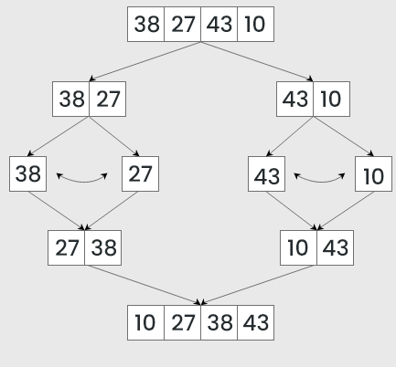It always takes a linear amount of time since it always divides the array into two halves and takes a linear time to merge them back together. This makes it good for large arrays, but not so good for smaller arrays. It uses additional memory to create subarrays, so it’s not optimal for low storage.
Quick Sort
Quick sort is a sorting algorithm that works by choosing a number as its pivot, and partitioning the elements so that the ones less than the pivot are on the pivot’s left, and the one’s greater than the pivot are on the pivot’s right. Those partitioned sides are then also partitioned over and over until every element is in the correct position and the sort is complete. This is shown in the picture below.

The actual partitioning works by starting by comparing the pivot with the first element.
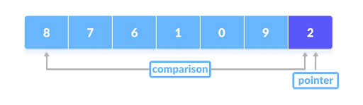If the element is greater than the pivot then a second pointer (the first pointer is the pivot) is put at that element. Then it compares the pivot with the next element and if it's less than the pivot its swapped with the second pointer.
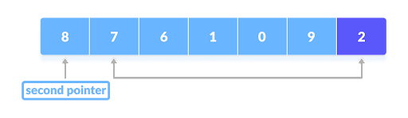For instance in the picture below 8 is the second pointer, so the algorithm keeps checking each element until it finds 1 which is less than the pivot so it gets swapped with 8.
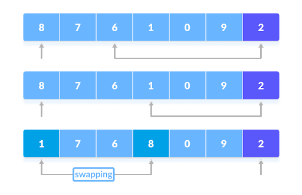This process repeats over and over until every element has been compared with the pivot and swapped accordingly, and then the last second pointer is swapped with the pivot causing all the elements less than the pointer to be on the left, and all the ones greater than the pointer to be on the right.
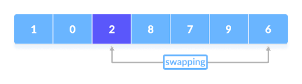Quick sort’s time complexity varies based on how the pivot is chosen, if the pivot is selected so that both sides are balanced then it's fast, but if it's positioned where both sides are extremely unbalanced then it's much slower. Quick Sort doesn’t use much memory since all the partitioning is done within the original array. However it's an unstable sort since duplicate elements don’t maintain their relative positions.
Heap Sort
Heap sort is a sorting algorithm where the array is first built into a binary tree. A binary tree is a data structure where each node has two children. You can see an example of an array being turned into a binary tree in the picture below.
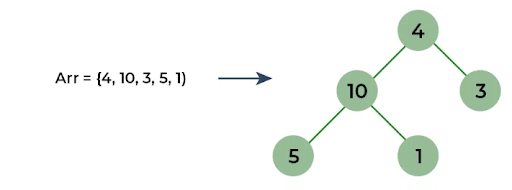This binary tree is then “heapified” by swapping the nodes so the parent node is always greater than or equal to the child.
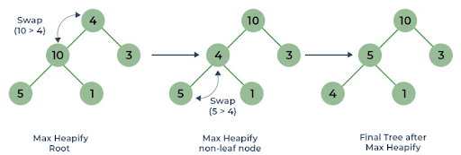After this is done the sort is performed by removing the root node (the one at the top) and moving it to the end of the array. The tree is then heapfied again, the max node is sent to the end of the array, and this repeats until all the nodes have been put in order.
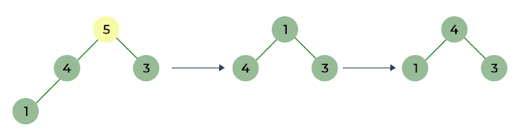The time complexity is always the same so it is good for large data sets, but not so good for small ones. Its storage use is minimal, just like Quick Sort, since it only needs the original array to sort. Just like Quick Sort it is unstable so the relative order of duplicate elements will not be preserved.
Sort Comparison
All three sorts have their own advantages and disadvantages in regards to space and time complexity. They are all good for large data sets, but merge and quick are not efficient when it comes to small data sets. As indicated in the table below their time complexities are all the same, but it is possible for Quick Sort to be the slowest if the pivot is chosen poorly. Due to its sub arrays, Merge Sort is the worst for space complexity, while Quick Sort and Heap Sort don’t have this drawback since everything happens in the same array. However Merge Sort is the only stable sort, as both Quick Sort and Heap Sort will change the relative order of duplicate elements.
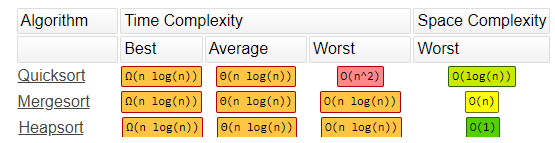Algorithms and Conspiracy Theories
The Basics of Recommendation Algorithms
A recommendation algorithm is an AI algorithm that is used to suggest or recommend products, services, posts, or any desired content to a consumer based on information collected about the consumer. Due to their effectiveness they are utilized almost everywhere on the internet from social media to shopping sites, so that these sites can get the most consumer attention possible. For instance you might have Amazon recommend you some items based on what you’ve been searching and looking at on Amazon. On social media sites the data collection is often even more extensive leading to the posts or videos being recommended on TikTok or Instagram based on the smallest behaviors like what posts you liked, watch time, or location.
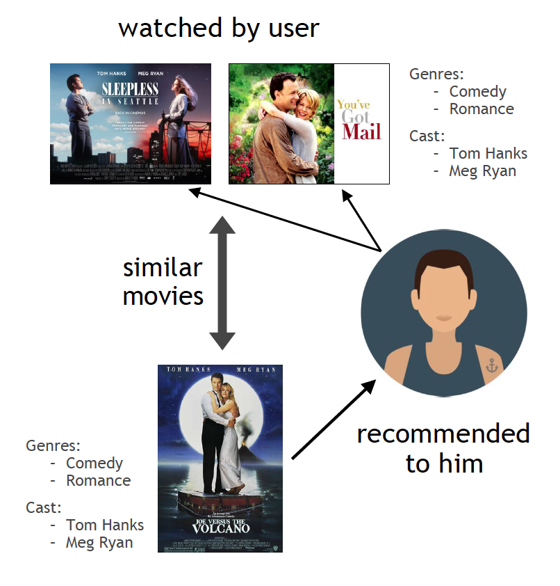The Feedback Loop
One of the main ways recommendation algorithms are so effective is through feedback loops. First it uses its current model to make some recommendations for the user. Then the user gives feedback on those recommendations, through viewing or liking the content, which the recommendation algorithm uses to improve its recommendations. The user then gets better recommendations and the process repeats leading to recommendations becoming even more narrow and specific to the user. This leads to the user being stuck in an echo chamber where they only get content that becomes increasingly catered to them, and while this may be great for streaming services or shopping sites, it can begin to become problematic when used in social media.
Conspiracy Theories & Algorithmic Amplificationt
Echo chambers can be very harmful in social media as they can limit the information one receives. Due to the popularity garnered by conspiracy theories they are often recommended to social media users, and when users become hooked onto the theory they get more content about said theory due to the algorithm trying to find more of what that user likes. This leads to users becoming stuck in a loop of receiving more and more false information, as they become more engaged in sensational conspiracy theory content, and more content of that nature is provided to them.
Platform Incentives
Despite the harm of recommendation algorithms on the information we receive, they are still widely used in practically all social media, often completely unrestricted. This is because these algorithms are highly effective at keeping users engaged and producing more ad revenue for the platform so content providers have no incentive to cut back on usage of recommendation algorithms. The fact of the matter is that without recommendation algorithms social media would be nowhere near engaging as it is, and for that reason they won’t be going anywhere anytime soon.
Potential for Exploitation
Content creators are often aware of the nature of recommendation algorithms and often use certain tactics so that the algorithm favors their content. They may use provocative thumbnails or titles to try to gain clicks or make content that aligns with trends. The content doesn’t even need to be something that the user likes, as long as it's something that gets the user attention, the user will engage with it more, leading to the algorithm to produce more content that gets the user’s attention. When this content contains misinformation it can lead to people becoming highly misinformed or becoming strongly opinionated on controversial topics. This is why in our day and age conspiracy theories have become so widespread, due to it being so easy to spread misinformation.